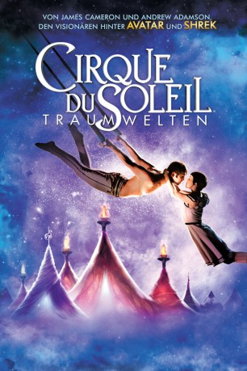

#6745 Cirque du Soleil - Traumwelten 
Alternativ: Cirque du Soleil: Worlds Away
 
 IMDB-Wertung: 6.8 / 10
IMDB-Wertung: 6.8 / 10  Metascore: 0
Metascore: 0 
Die junge Mia (Erica Linz) besucht einen altmodischen Zirkus und verliebt sich in einen Akrobaten, der bei ihrem Anblick stürzt und dabei statt auf den Manegenboden in ein Paralleluniversum gelangt. Mia folgt ihm und durchschreitet auf ihrer Suche nach ihm die sieben magischen Welten des Cirque du Soleil: "O" ist eine Geisterwelt mit unsichtbaren Wesen und einem furchterregenden fliegenden Schiff; in "KÀ" ist die normale Raumwahrnehmung außer Kraft gesetzt; "Mystère" ist die Welt der Luftakrobaten; "Viva Elvis" bietet Artistenaction zur Musik vom King; in "Criss Angel Believe" spricht Mia mit einem tanzenden Hasenkopf; in "Zumanity" versucht eine Schlangenfrau den Akrobaten ins Wasser zu locken und "The Beatles Love" ist bestimmt vom Zirkuslied "Being for the Benefit of Mr. Kite". Zum Abschluss der fantastischen Reise treffen sich die Verliebten endlich zu einem Ballet in der Luft.
Jahr: 2012
Dauer: 91 Minuten
FSK:
Land: USA Studio: Paramount PicturesTonspuren: DD5.1 - ,
Untertitel:
Auflösung: 1080p (1920x1080) Größe: 8325 MB
Genre: Fantasy
Regisseur: Andrew Adamson
Drehbuch: Andrew Adamson
Soundtrack:
Darsteller:
- Erica Linz als Mia / Kà Cast Member
- Igor Zaripov als The Aerialist
- Dallas Barnett als Boss
- Tanya Drewery als Circus Marvelous Cast Member
- Lutz Halbhubner als Ringmaster
- John Clarke als Sad Clown
- Sarah Houbolt als Circus Marvelous Cast Member
- Ascia Maybury als Circus Marvelous Cast Member
- Damien Gordon als Circus Marvelous Cast Member
- Zach Brickland als Circus Marvelous Cast Member
- Iren Goed als Circus Marvelous Cast Member
- Roufan Gan als Circus Marvelous Cast Member
- Pei Pei Lane als Circus Marvelous Cast Member
- Shaowei Xin als Circus Marvelous Cast Member
- Stephen Cooper als Circus Marvelous Cast Member
- Mengkai Shi als Circus Marvelous Cast Member
- James Fletcher als Circus Marvelous Cast Member
- Wenbo Zheng als Circus Marvelous Cast Member
- Mariska du Plessis als Circus Marvelous Cast Member
- Dan Hales als Circus Marvelous Cast Member
- Graham Candy als Circus Marvelous Cast Member
- Mike Baker als Circus Marvelous Cast Member
- Matt Gillanders als Circus Marvelous Cast Member
- Alan Thompson als Circus Marvelous Cast Member
- John Abraham als 'O' Cast Member
- Maria Akhlatkina als 'O' Cast Member
- Alifia Alimova als 'O' Cast Member
- Zulfia Alimova als 'O' Cast Member
- Terry Bartlett als 'O' Cast Member
- Oomaa Bayartsogt als 'O' Cast Member
- Suzannah Bianco als 'O' Cast Member
- Stephen Bland als 'O' Cast Member
- P.J. Bogart als 'O' Cast Member
- Irina Borbounewitch als 'O' Cast Member
- Cinthia Bouhier als 'O' Cast Member
- Brynn Butzman als 'O' Cast Member
- Jorge Castano als 'O' Cast Member
- Luydmyla Chovhun als 'O' Cast Member
- Alexander Clements als 'O' Cast Member
- Johanne Clerk als 'O' Cast Member
- Jonathan Cole als 'O' Cast Member
- Danut Coseru als 'O' Cast Member
- Pierre Cottin als 'O' Cast Member
- Natalia Custurova als 'O' Cast Member
- Alessandro D'Agostini als 'O' Cast Member
- Namchinkhand Damba-Kaye als 'O' Cast Member
- Enkhjargal Dashbaljir als 'O' Cast Member
- Benjamin Deschamps als 'O' Cast Member
- Naranglia Dulamsuren als 'O' Cast Member
- Sylvie Dumaine als 'O' Cast Member
Datei: X:\Dokumentationen\Cirque Du Soleil\Cirque du Soleil - Traumwelten (2012, FSK, 1920x1080) 3D.mkv seit 11.08.2017
Festplatte: HD Serien(SU-Z)+Dokus+Musik
 Alle Filme aus Gruppe 'Dokumentationen\Cirque Du Soleil'
Alle Filme aus Gruppe 'Dokumentationen\Cirque Du Soleil'
- Cirque du Soleil - Traumwelten (der aktuelle Film)